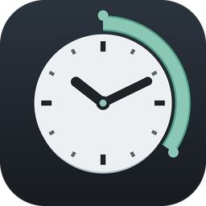

Time Tracker
A small clock on the toolbar that records real work time per design: total time and mouse-moving time, per day, kept on your PC and carried between your computers inside the design.
Get it on the Autodesk App StoreWhat it does
- Counts active work in the foreground Fusion window, with a short thinking allowance after the last input that you can set from 30 seconds to 5 minutes.
- Shows a second number, mouse moving: the seconds in which the pointer was actually moving. It is part of the total, never added to it.
- Keeps a daily history per design, lets you add past work by hand, and exports everything as CSV.
- Stores each computer's time inside the design itself as a small text note, written only when you save, so a second computer shows it too. Geometry, features and parameters are never touched.
- Makes no network calls and has no account. Everything stays on your computer.
How to use it
- Install from the Autodesk App Store and open Fusion. The clock appears at the top left, in the Quick Access Toolbar.
- Hover over the clock to see the active design's hours. Click it for history, settings, past-time entries and export.
- Save the design as usual; each save carries this computer's time with it.
Support
Email: Cazvoorhees@gmail.com. Please include your Fusion version, your Windows version, and the status line from the Time Tracker details window. Replies usually within two business days.
Read the privacy policy.